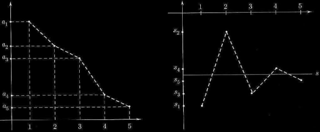

Serie a termini di segno variabile
Veniamo ora allo studio delle serie a temrini di segno qualsiasi. Diamo anzitutto una definizione.
Definizione 6.2.1. Una serie Σan si dirà assolutamente convergente se converge la serie (a termini non negativi) Σ|an|. □
Vale il seguente teorema:
Teorema 6.2.2. Se la serie Σak converge assolutamente, allora converge.
Dim. Lo proveremo come conseguenza del teorema di monotonia, decomponendo il termine genrale della serie nella sua parte positiva e negativa. Per ogni k, definiamo:
sn+ = somma dei soli termini ak ≥ 0, per k = 0, 1, ..., n
sn− = − (somma dei soli termini ak < 0, per k = 0, 1, ..., n)
Poiché sn = sn+ − sn−, sarà sufficiente mostrare che le successioni sn+ e sn− sono convergenti per concludere che sn converge, e quindi che la serie Σak converge.
Osserviamo che sn+ e sn− sono successioni monotone non decrescenti (aumentando n di un'unità si somma ad sn+, sn− una quantità positiiva, oppure non si somma nulla). Inoltre, per la disuguaglianza triangolare:
D'altro canto, per ipotesi la serie Σak converge assolutamente, ossia |Σak| converge, e quindi la quantità |Σak| è limitata; perciò le successioni sn+, sn− sono superiormente limitate e non decrescenti, e pertanto convergono, per il teorema di monotonia. Il teorema è così dimostrato. □
Dunque la convergenza assoluta implica la convergenza (ordinaria), detta anche convergenza semplice; il viceversa non è vero.
Esempio 6.2.3. La serie Σ (−1)n/nα, con α > 1 è convergente, anzi assolutamente convergente. Infatti si ha
e la seie Σ 1/nα è convergente per α > 1. Se α = 1 nulla, per il momento, possiamo concludere circa la convergenza della serie data, poiché la serie dei valori assoluti corrispondente è la serie armonica, che è divergente. ■
Mostreremo ora che Σ (−1)n/n è convergente, fornendo così un esempio di serie convergente, ma non assolutamente convergente.
Serie a termini di segno alternato. Criterio di Leibniz
Tra le serie a termini di segno variabile, un caso particolarmente semplice è costituito dalle serie a segni alterni, per le quali vale il seguente criterio di convergenza:
Teorema 6.2.4 (Criterio di Leibniz) Sia data la serie
Se:
la successione {an} è decrescente;
an → 0 per n → ∞
allora la serie è convergente. Inoltre, le somme parziali di indice pari approssimano la somma per eccesso, quelle di indice dispari per difetto; il resto della serie è maggiorato, in valore assoluto, dal primo termine trascurato. In formule, detta s la somma della serie, si ha:
(il simbolo ↓s indica che la somma parziale s2n converge a s dall'alto. In altre parole, le somme parziali con un numero pari di termini (s2n) si avvicinano al valore limite s diminuendo.
Osserviamo che, analogamente a quanto osservato riguardo ai criteri di convergenza per le serie a termini positivi, il criterio di Leibniz può essere applicato anche se i termini sono definitivamente di segno alterno e la successione an è definitivamente decrescente.
Si noti che la successione delle somme parziali di una serie a segni alterni ha la forma:
s1 = −a1
s2 = −a1 + a2
s3 = −a1 + a2 − a3
.......................................
sn = −a1 + a2 − a3 + ... + (−1)nan
dove gli ai sono tutti ≥ 0. Se allora la successione an tende a zero monotonamente, l'andamento di an e di sn è del tipo descritto dalla figura seguente, che sostanzialmente contiene la dimostrazione del criterio di Leibniz:
Dim. Consideriamo la successione delle somme parziali, sn, e le due successioni, estratta da questa, s2n e s2n+1. Consideriamo dapprima la successione s2n, così formulata:
s0 = a0
s2 = s0 −a1 + a2 ≤ s0 perché a2 ≤ a1
s4 = s2 −a3 + a4 ≤ s2 perché a4 ≤ a3
.......................................
Come si vede, la successione {s2n} è monotona decrescente. In modo analogo si dimostra che la successione {s2n+1} è monotona crescente. Inoltre,
s1 ≤ s2n+1 = s2n − a2n+1 ≤ s2n ≤ s0
perciò {s2n+1} è superiormente limitata e {s2n} è inferiormente limtiata. Le due successioni sono quindi convergenti, per il teorema di monotonia; possiamo anche dire che convergono allo stesso limite, perché
0 ≤ s2n − s2n+1 ≤ a2n + 1 → 0
Detto s questo limite comune, abbiamo allora provato le (i). Inoltre, dal fatto che s2n+1 → s e s2n → s si deduce che
sn → s.
Proviamo ora (ii). Poichè s2n+1 ↑ s e s2n ↓ s, possiamo scrivere
s2n − 1 ≤ s ≤ s2n
s2n + 1 ≤ s ≤ s2n
da cui si deduce
0 ≤ s − s2n − 1 ≤ s2n − s2n − 1 = a2n
0 ≤ s2n − s ≤ s2n − s2n + 1 = a2n+1
Perciò (per n sia pari che dispari) si ha
|Rn| = |s − sn − 1| ≤ an
che è la (ii). □
Teorema 6.2.5 Applicando il criterio di Leibniz osserviamo che le serie
sono entrambe convergenti (la prima è assolutamente convergente, la seconda no). La prima serie è rapidamente convergente. Sommando infatti i primi 6 termini della serie
1 − 1 + 1/2 − 1/6 + 1/24 − 1/120 = 11/30 = 0.36
si ottiene un valore per difetto della somma con un errore che non supera a 1/6! = 1/720.
Mostreremo (par.xx) che tale somma è 1/e.
La seconda serie è lentamente convergente; per avere un valore della somma approssimato (per eccesso) a meno di 1/100 bisogna sommare 99 termini! Come vedremo (par.xx), la somma si dquesta serie è log 2; ma la serie non è adatta al calcolo apprissimato di questo numero.
Esempio 6.2.6
È una serie a segni alterni, an = (n − 1)/n(n + 1) è positivo e tende a zero. Poiché an ~ 1/n, la serie non converge assolutamente; vediamo dunque se è applicabile il criterio di Leibniz. Dobbiamo verificare se è decrescente, ovvero:
an+1 ≤ an
n/(n + 1)(n + 2) ≤ (n − 1)/n(n + 1)
ossia
n2 ≤ n2 + n − 2
vero per n ≥ 2. Dunque si può applicare il criterio di Leibniz e concludere che la serie converge. ■
Esempio 6.2.7
Si tratta di una serie a segni alterni, poiché an = logn/n è positiva; inoltre an → 0 (gerarchia degli infiniti). La serie non converge assolutamente, perché logn/n > 1/n (e Σ 1/n diverge); vediamo se è applicabile il criterio di Leibniz. In questo caso non è facile provare la monotonia della succession per via puramente algebrica, cioè studiando la disequazione
an+1 ≤ an
log(n+1)/(n + 1) ≤ logn/n
È più comodo invece studiare la monotonia della successione an mediante il calcolo differenziale: posto
f(x) = log x/x per x > 0
(con x variabile reale), calcoliamo:
f'(x) = (1 − log x)/x2 ≤ 0 per x ≥ e
Ne segue che f è decrescente per x ≥ e; di conseguenza la succesisone an = f(n) è decrescente almeno per n ≥ 3 (il primo intero e). Pertanto, per il criterio di Leibniz la serie converge. ■
Esempio 6.2.8
Scriviamo:
La prima serie converge perché è a termini positivi e an ~ 1/n2; la seconda converge per il criterio di Leibniz; quindi la serie di partenza converge. Abbiamo qui usato un fatto generale:
come si verifica vedendo la serie come limite della successione delle somme parziali, e applicando il teorema sul limite della somma.
Esempio 6.2.9
Scriviamo:
La prima serie converge per il criterio di Leibniz; la seconda diverge (serie armonica); quindi la serie di partenza diverge. Più in generale:
per lo stesso argomento usato nell'esempio precedente.
Questo esempio è interessante anche per il seguente motivo. Si noti che:
Dunque la serie di partenza è una serie a segni alterni, e il suo termine generale tende a zero. Se affermassimo che essa converge per il criterio di Leibniz, diremmo il falso (abbiamo visto che la serie diverge). Il punto è che non abbiamo verificato l'altra ipotesi del criterio di Leibniz, ossia che (√n + (−1)n)/n sia monotona decrescente. Evidentemente, quest'ipotesi non è verificata. (Per esercizio si calcolino i primi 10 valori della successione, e si osservi cosa accade).